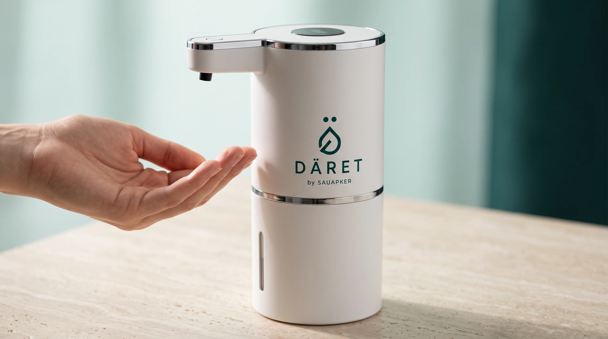
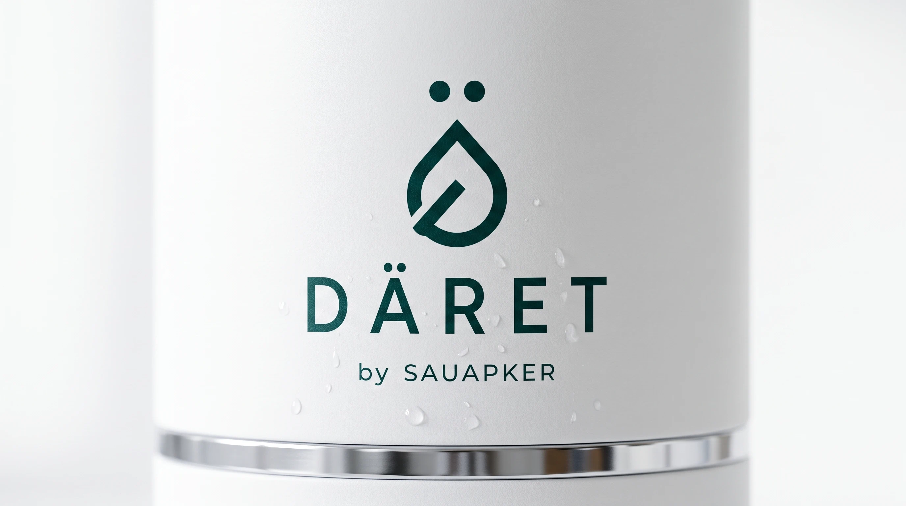
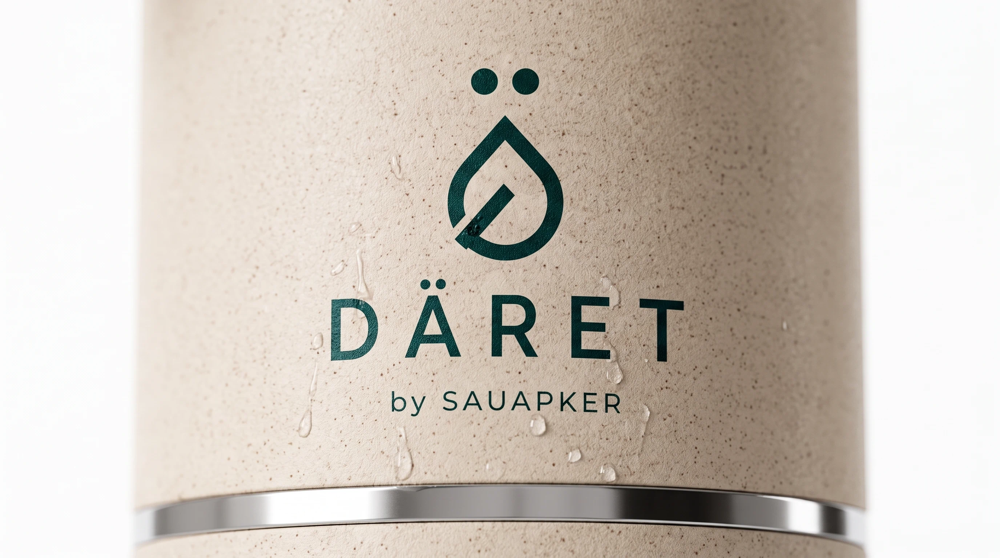
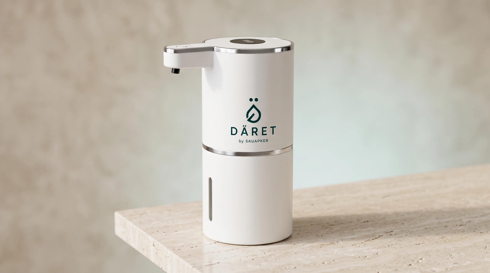
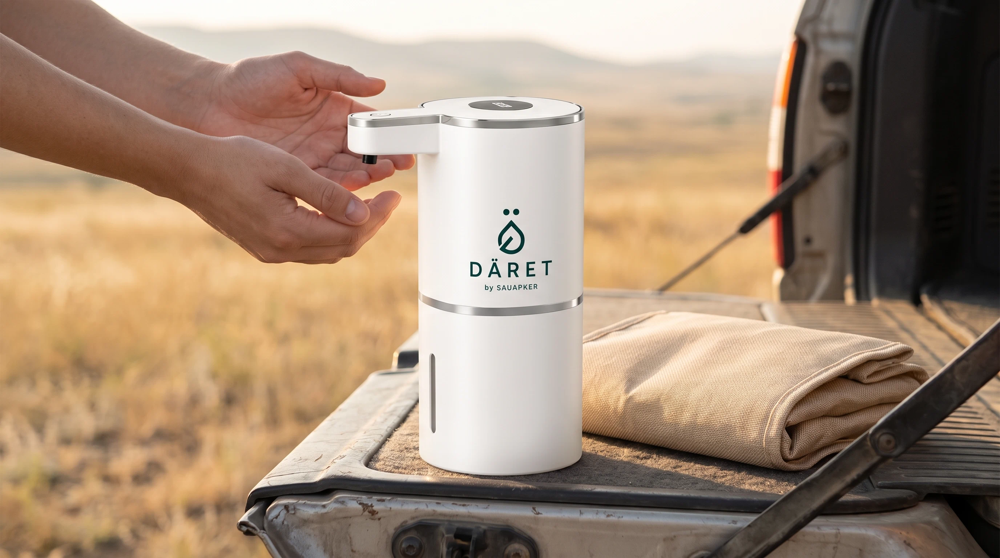
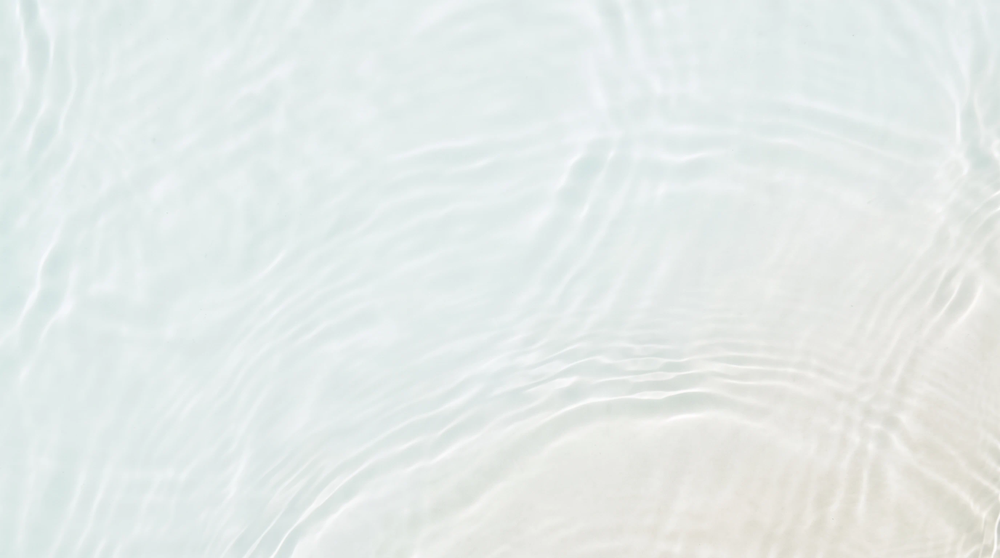

Pure White
Матовый белый, чистый и нейтральный.
Сенсорное омовение · до 50 % экономии воды
Кран открывают и закрывают мокрыми руками, поэтому он течёт всё омовение. DÄRET подаёт воду только под рукой: убрали руку — вода остановилась. 420 мл на полное омовение, обе руки свободны, лаконичный корпус — и хороший подарок.
Зачем
Бутылку нужно держать и наклонять — одной рукой это почти невозможно, поток рваный, половина воды уходит мимо. Кран не лучше: его открывают и закрывают мокрыми руками, поэтому всё омовение он течёт впустую. DÄRET стоит сам и даёт ровную струю ровно тогда, когда вы подносите руку.

420 мл хватает на полное омовение — примерно вдвое меньше, чем уходит из открытого крана.
Устройство стоит само, вода идёт по датчику. Держать и наклонять ничего не нужно.
293 грамма и 21 сантиметр. В бардачок, в рюкзак, в ручную кладь.
Лаконичный корпус в двух отделках и универсальный USB-C. Уместный подарок близким.
До 420 мл чистой воды в резервуар.
Касание сенсорной кнопки на крышке.
Датчик срабатывает на расстоянии до 6 см, отклик 0,25 с.
Дома, в поездке, на работе.

Спокойная форма без лишних деталей — устройство уместно смотрится и в машине, и на полке в ванной. Обе отделки одинаково хорошо выглядят в подарок.
Матовый белый, чистый и нейтральный.

Тёплый биокомпозит с текстурой пшеничной соломы.



Спецификация
| Объём резервуара | 420 мл |
|---|---|
| Питание | DC-5V, USB-C |
| Мощность | 1,5 Вт |
| Включение | сенсорное касание |
| Дистанция датчика | 0–60 мм |
| Скорость отклика | 0,25 с |
| Влагозащита | IPX5 |
| Габариты | 210 × 75 мм |
| Вес | 293 г |
| Рабочая температура | от 5 до 45 °C |
| Влажность | 0–85 % |
| В комплекте | кабель зарядки, крепление-стикер |


Открытый кран расходует воду всё время, пока он открыт, — в том числе когда руки не под струёй, ведь закрыть его можно только рукой. DÄRET подаёт воду по датчику и останавливает сразу, как вы её убрали. Умеренность в омовении — часть самой традиции.
Да. Вода идёт только те секунды, когда рука под датчиком, поэтому расход примерно вдвое ниже, чем из открытого крана, — 420 мл достаточно взрослому человеку на полное омовение.
Бутылку нужно держать — здесь обе руки свободны. Струя ровная, без брызг, а расход воды примерно вдвое меньше.
Одного заряда через USB-C хватает на длительный период — зависит от частоты использования.
Да. В комплекте есть крепление, устройство можно закрепить на стене и использовать ежедневно.
Резервуар промывается чистой водой. Корпус имеет защиту IPX5 и выдерживает влажную протирку.
Свяжемся, уточним цвет корпуса и количество, подтвердим доставку.
Или напишите: info@sauapker.kz